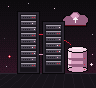

Бэкенд
Бэкенд — это серверная часть сайта или приложения, которую пользователь не видит. Бэкенд-разработчик пишет логику на сервере: регистрацию и вход, обработку заказов, работу с базой данных и API, через которое сервер общается с сайтом и приложением.
Что делают бэкенд-разработчики
API для сайтов и приложений
Сервер, который отдаёт данные сайту и мобильному приложению.
Базы данных
Хранение пользователей, заказов и сообщений, быстрый поиск по ним.
Вход и оплата
Регистрация, вход по паролю, оплата заказов и защита данных.
Боты и интеграции
Чат-боты для мессенджеров и связь с другими сервисами.
Языки и инструменты
Начни с Python и SQL — с ними проще всего написать первый сервер. Нажми на ячейку, чтобы узнать подробности.
Что дальше